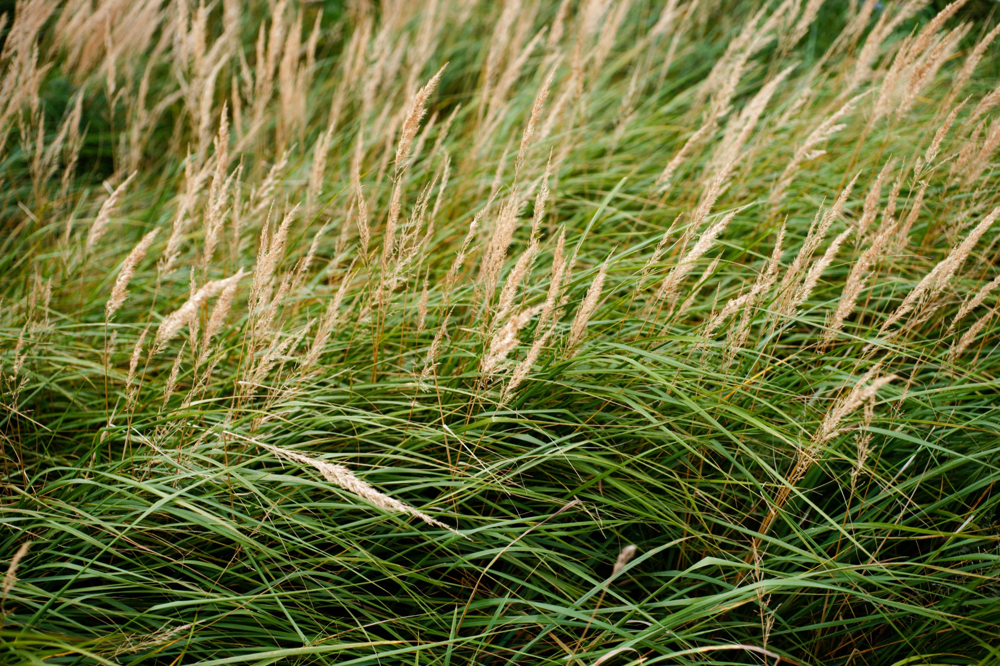
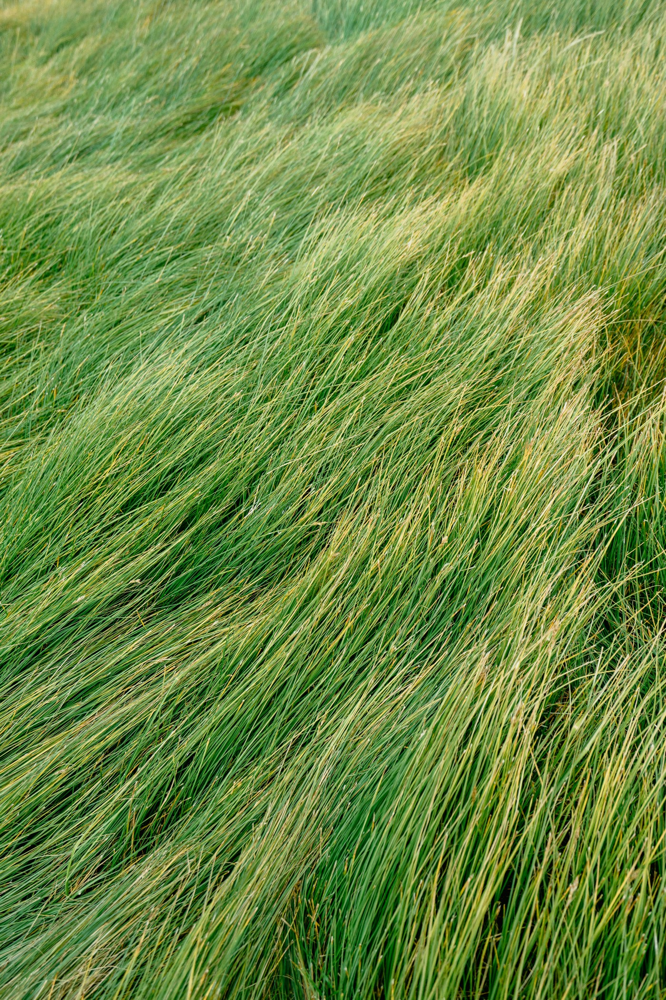

technology & science

Advanced botanical actives, engineered for the skin, not just the surface, and formulated directly onto the glove so they're ready the moment it goes on.
Absorbed into the skin, not resting on top of it.
The industry standard for over a decade. Its particles sit on the surface of the skin, and actives diffuse slowly.
Smaller. Our proprietary process frees bound actives and shrinks them so they diffuse into skin quickly.
Three benefits, every time gloves go on.
Balanced-looking skin
Helps maintain skin's natural balance for a smoother, healthier-looking complexion.
Natural pH
Helps maintain skin's natural pH, reducing the look and feel of dryness.
Antioxidant support
Helps defend skin's appearance against everyday environmental stressors.

Skin hosts a diverse community of micro-organisms known as the skin microbiome. Frequent washing and long hours in gloves can leave skin feeling out of balance. Avenall™ is designed to support how skin looks and feels, not just moisturize the surface.
Smaller particles, faster results.
Unlock
Breaks down the oat's intercellular matrix to free actives that colloidal oatmeal leaves bound inside the grain.
Reduce
Shrinks those compounds to roughly 2,000 times smaller than colloidal oatmeal.
Deliver
Vitamins, minerals, antioxidants, and oat pre- and post-biotics, immediately available to skin.
License our oat bioactives.
Bring patent-pending oat technology directly into your disposable glove and skincare lines.
Partner with us